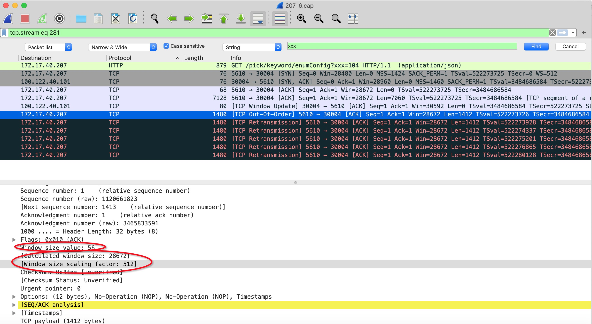

滑动窗口
滑动窗口这个概念我们非常熟悉，在tcp协议中，它带表了还能接收的数据上限。我们来看下实际操作。

当我们发现滑动窗口非常小时不要紧张，需要进一步分析 calculated window size
window size value: 56 我们这个包是一个异常包，滑动窗口56，这窗口也太小了，难道是有问题？当然不是，真正的滑动窗口是calculated window size: 28672 。这个值根据window size scaling factor :512 和 window size value: 56计算出来。具体计算规则可以参考我们后面的引用链接
MTU vs MSS
相信大家都知道MTU这个概念。 MTU最大传输单元，这个最大传输单元实际上和链路层协议有着密切的关系，EthernetII帧的结构DMAC+SMAC+Type+Data+CRC由于以太网传输电气方面的限制，每个以太网帧都有最小的大小64字节，最大不能超过1518字节，对于小于或者大于这个限制的以太网帧我们都可以视之为错误的数据帧，一般的以太网转发设备会丢弃这些数据帧。由于以太网EthernetII最大的数据帧是1518字节，除去以太网帧的帧头（DMAC目的MAC地址48bit=6Bytes+SMAC源MAC地址48bit=6Bytes+Type域2bytes）14Bytes和帧尾CRC校验部分4Bytes那么剩下承载上层协议的地方也就是Data域最大就只能有1500字节这个值我们就把它称之为MTU。
不过鉴于Internet上的标准MTU值为576字节，所以建议在进行Internet的UDP编程时，最好将UDP的数据长度控制在 (576-8-20)548字节以内。
说白了，物理层，一次最大能传输1518字节，除去一些头，能传输1500字节。Internet 标准是576字节，不可靠协议最好不要超过这个大小，否则可能丢包
MSS 为tcp最大传输单元。
MSS=MTU-40(IP header(20 bytes) + TCP header(20 bytes) )
tcp 握手的理解
tcp握手一个重要的作用是，商量mss，滑动窗口大小。假如我们不握手，贸然传输一个数据过去，这个数据有能会丢弃由于比mss大，由于接收方暂时没有空间（滑动窗口为0）。udp没有握手，就是贸然传输，所以mtu不要超过576字节。
容器引发的mtu不一致实战
我们已经理解了mtu， mss等基本概念。我们来实践一下。
一个容器实例，启动一个tcp 监听30004，宿主机有两台A和B，都映射一个端口8081给容器30004，我们可以通过宿主机A和B访问到同一个实例（尽管这个实例可能只存在A或B的某一台中）。这是我们容器的通常玩法。假如容器的默认网卡mtu 为1500。宿主机默认网卡mtu也为1500。
此时我们建立tcp 握手，问题1，这个握手的信息需要传递mss，是容器网卡mtu决定，还是宿主网卡mtu决定？我们这里两个网卡都是1500，所以三次握手告诉client的msss都是1460。问题2，此时client 发送了一个1455的包过去。会发生什么？
回答1，根据我们实践，这个mss是由容器内网卡mtu决定，我们可以通过ifconfig eth0 mtu 9000 up来更改mtu，重启失效。
回答2，会丢包。而且很可能是偶发的。因为一些client的mtu即使是1500，也会发送低于1460的包，这个值可以由用户应用控制，跟backlog 设置类似。一些client 会发送1455包，比如阿里云负载均衡。为何会丢包？原理很简单，容器在负载的时候，不同物理机之间通过overlay网路传递，这个种网络一般会有自己的协议头。所以它的mtu会少50为1450（取决于协议），所以1455的包会被丢弃。你可以通过上节所介绍的方法在宿主机和容器内分别抓包来追踪到这个问题。
如何复现？你可以通过TCMP协议来定位问题。它是一个与tcp同级的协议，也有自己的协议头。不同的是，协议里约定了一些值来追踪错误。可以说这个协议是专门用来追踪网络错误的。ping 应用就是这个协议的实现。注意这个协议没有端口指定一说。所以直接ping ip 就行。
通过ping 发送固定大小包来测试MTU, 注意把数据包长度加上数据包头28.
ping -s 1423 -M do 10.42.1.62
所以结论是，容器内部mtu一定不要大于overlay网络mtu值。
参考
TCP Window Scale 概念
https://www.jianshu.com/p/a10408933ff4
mtu, udp不可靠
https://zhuanlan.zhihu.com/p/25622691
ping固定包大小